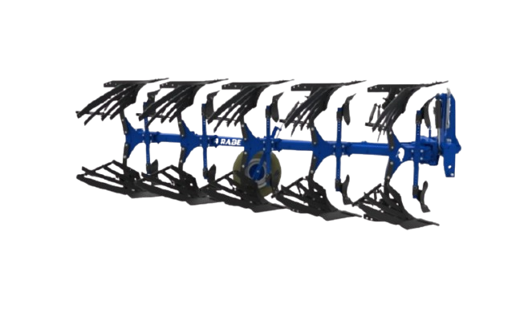

Implement Traktor
Zoomlion Reversible Plow 1LF-550T – 1350T
1LF-550T / 560T / 650T / 750–950T / 1050–1350T
Bajak balik (reversible plow) heavy-duty untuk tanah berpasir, liat, loess, hingga liat berat.
Keunggulan
- Headstock heavy-duty dengan penetrasi tanah lebih baik dan jarak masuk lebih pendek, unggul di tanah berat
- Slat moldboard dan wing share 70% lebih awet dibanding produk sejenis, interval penggantian lebih panjang
- Desain sliding headstock memudahkan penyetelan kelurusan (alignment)
- Kontrol kedalaman stepless lewat baut penyetel, presisi dan praktis
- Pilihan model lengkap, dari 5 hingga 13 alur untuk traktor 210–700 HP
Spesifikasi
| Model | 1LF-550T / 560T / 650T / 750T / 850T / 950T / 1050T / 1150T / 1250T / 1350T |
|---|---|
| Dimensi (P × L × T) | 5370 × 3108 × 1860 – 17085 × 7620 × 2480 mm (versi standar) |
| Berat | 2230–8960 kg (versi standar) |
| Kebutuhan Daya Traktor | 210–700 HP |
| Kategori Hitch | Category 3, Category 3N, Category 4N |
| Struktur Rangka Utama | 550T/560T: In-furrow, 5 alur (4+1) · 650T: In-furrow, 6 alur (5+1) · 750–950T: On-land / In-furrow · 1050–1350T: On-land, 13 alur (8+3+1+1) |
| Ukuran Beam | 140 × 140 × 10 – 180 × 180 × 12.5 mm |
| Lebar Alur | 1000 mm (560T: 1200 mm) |
| Jarak Bebas Bawah Beam | 800–900 mm (Standar) |
| Lebar Badan Bajak | 350/400/450/500 mm (560T: 420/480/540/600 mm) |
| Kedalaman Bajak | 0–380 mm |
| Metode Penyetelan | Mekanis |
| Kecepatan Kerja | 6–12 km/jam |
| Kecepatan Transportasi | 25 km/jam |
| Roda Kedalaman | Combined Depth & Transport Wheel |
| Proteksi Beban Lebih | Shear Bolt |
| Konfigurasi Badan Bajak | Slatted Body, Reinforced Plow Leg Plate |
| Bajak Depan | Large Front Moldboard |
| Traktor Kompatibel | 550T: DG2204, PL2304-3, PQ2404, DQ/PQ2604, DQ/PQ2754, PQ2804 · 560T/650T: PQ2804, PV3204, DV3504 · 750–950T: PV3204, DV3504, DV4004/4104 · 1050–1350T: DV4004/4104, DX7004 |
Tanya harga & ketersediaan unit
Tim kami siap membantu memilih unit yang sesuai kebutuhan lahan Anda.